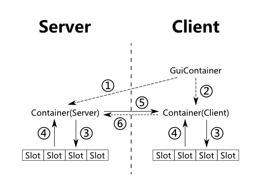

概述
其实呢，GUI界面因为主要是2D渲染，其实是很简单的，但是渲染一个带有物品槽（Slot）的GUI呢？
事情变得复杂了起来：处理鼠标点击（包括按住Shift点击），物品槽和容器、物品、甚至只是一个临时的物品槽（比如工作台的物品槽就是临时生成的，在关闭GUI后物品槽里的东西就全部以掉落物的方式转移出去了）的交互，客户端和服务端的物品同步，等等。
然而事情还并非只有这么简单：除了物品数据需要处理外，还有一些数据仍然需要同步，比如熔炉的进度条等，所以就必须要把这些东西进行分离，而Mojang独特的设计方式——在后面的内容中读者会更加深入地了解这种独特的设计方式，让这件事的复杂度又上升了一个等级。
那么我们现在来说一说设计一个带有物品槽的GUI应该是什么样子，后面的部分如无特殊声明，其中的GUI均指带有物品槽的GUI界面。
GUI界面的组成和主要数据传输
首先，首当其冲的是显示层，这一层带来的就是展现在我们面前的用户界面，它绘制这样一个界面，接收鼠标输入并简单处理。很显然，这一层理应只有客户端才需要存在，Minecraft为我们提供了一个类，叫做GuiContainer，用于处理这些事项。
然后，是用于具体处理逻辑和数据同步的控制层，这一层向GuiContainer提供绘制的部分可变数据，接收部分GuiContainer传递过来的操作并同步至服务端，并尽量保证服务端的数据和客户端的一致。这样一层服务端和客户端都应该存在，Minecraft提供了类Container解决这些问题。
最后，是用于存储数据，也就是物品信息的数据层，每一个物品槽都对应Minecraft的一个Slot类的实例。
如果用一张图表示大致结构的话，大概是下面这个样子：

（每个箭头代表一种数据传输，虚线的箭头用于传输控制，如鼠标点击等，实线的箭头用于传输数据，如槽内物品等）
接下来我们一个一个圈圈讲一下每一个箭头的含义。
①传输的是来自客户端的Gui事件，比如玩家点击按钮等，这些事件需要立刻处理，同时因为Mojang独特的设计方式，所以被直接发送至了服务端。
②传输的是一些需要经过客户端处理的Gui事件，比如玩家拖拽物品槽中的物品等，这些事件需要经过相应的处理发送至服务端，所以交由Container进行处理。
③传输的是特定物品槽的变动，比如当玩家点击物品槽时，计算物品槽会减少多少物品，并把这一变化传输至物品槽。
④传输的是Container和其他物品槽的变动，当相应的事件（比如物品被取走）触发时，数据就会传输至Container端以进行相应的操作（如工作台扣除相应的物品）。
⑤传输的是服务端物品的变化和进度条的变化。
⑥传输的是玩家对于物品槽的操作，客户端会将其同步至服务端。
所以，这些箭头中的哪些数据，Minecraft已经帮我们自动传输了呢？
首先是所有虚线箭头的部分，这些部分用于传输控制，Minecraft已经帮我们做好了，所以只剩下了③、④、和⑤，这三种数据的传输是需要我们手动执行的。其次即使是实线的部分，和物品相关的大部分数据传输也是不需要我们操心的。
在接下来的教程章节中，作者将分别带领读者去实现③、④、和⑤三条数据传输的控制，这一部分只介绍如何利用Forge实现GUI界面。
IGuiHandler
Forge提供了一个名为IGuiHandler的接口，我们现在来实现这个IGuiHandler，新建一个包com.github.ustc_zzzz.fmltutor.inventory，并在其中新建文件GuiElementLoader.java：
src/main/java/com/github/ustc_zzzz/fmltutor/inventory/GuiElementLoader.java:
package com.github.ustc_zzzz.fmltutor.inventory;
import com.github.ustc_zzzz.fmltutor.FMLTutor;
import net.minecraft.entity.player.EntityPlayer;
import net.minecraft.world.World;
import net.minecraftforge.fml.common.network.IGuiHandler;
import net.minecraftforge.fml.common.network.NetworkRegistry;
public class GuiElementLoader implements IGuiHandler
{
public static final int GUI_DEMO = 1;
public GuiElementLoader()
{
NetworkRegistry.INSTANCE.registerGuiHandler(FMLTutor.instance, this);
}
@Override
public Object getServerGuiElement(int ID, EntityPlayer player, World world, int x, int y, int z)
{
// TODO
}
@Override
public Object getClientGuiElement(int ID, EntityPlayer player, World world, int x, int y, int z)
{
// TODO
}
}
我们在初始化的时候，使用NetworkRegistry的registerGuiHandler方法注册了这个IGuiHandler，这一方法的第一个参数传入一个Mod的实例，第二个参数传入这个IGuiHandler。
然后我们注意到，IGuiHandler要求实现两个方法，显而易见，这两个方法分别作用于服务端和客户端。
在上面的那张图中我们也注意到了，位于服务端最顶端的对象是Container，而位于客户端最顶端的对象是GuiContainer，所以Forge约定，getServerGuiElement方法返回一个Container，而getClientGuiElement方法返回一个GuiContainer。Forge使用数字ID作为GUI的标识符，这里我们采用硬编码的方式来标记ID，不过让我们先实现一下Container和GuiContainer。这里的Container和GuiContainer都是测试页面，所以我起名为ContainerDemo和GuiContainerDemo，作为演示，教程的设计为按住Shift右键金蛋打开这个GUI。
Container和GuiContainer
在包com.github.ustc_zzzz.fmltutor.inventory下新建类ContainerDemo：
src/main/java/com/github/ustc_zzzz/fmltutor/inventory/ContainerDemo.java:
package com.github.ustc_zzzz.fmltutor.inventory;
import com.github.ustc_zzzz.fmltutor.item.ItemLoader;
import net.minecraft.entity.player.EntityPlayer;
import net.minecraft.inventory.Container;
import net.minecraft.item.ItemStack;
public class ContainerDemo extends Container
{
public ContainerDemo()
{
super();
}
@Override
public boolean canInteractWith(EntityPlayer playerIn)
{
return new ItemStack(ItemLoader.goldenEgg).isItemEqual(playerIn.getCurrentEquippedItem());
}
}
Container只要求我们实现一个canInteractWith方法，要求我们检查玩家打开这个GUI是否合法，因为设计为按住Shift右键金蛋打开这个GUI，所以只需要检查玩家是不是手持一个金蛋就可以了。一些附加的方法会在后续章节讲到。
然后我们实现GuiContainer，新建一个包com.github.ustc_zzzz.fmltutor.client.gui，并在其中新建类GuiContainerDemo：
src/main/java/com/github/ustc_zzzz/fmltutor/client/gui/GuiContainerDemo.java:
package com.github.ustc_zzzz.fmltutor.client.gui;
import com.github.ustc_zzzz.fmltutor.inventory.ContainerDemo;
import net.minecraft.client.gui.inventory.GuiContainer;
import net.minecraftforge.fml.relauncher.Side;
import net.minecraftforge.fml.relauncher.SideOnly;
@SideOnly(Side.CLIENT)
public class GuiContainerDemo extends GuiContainer
{
public GuiContainerDemo(ContainerDemo inventorySlotsIn)
{
super(inventorySlotsIn);
}
@Override
protected void drawGuiContainerBackgroundLayer(float partialTicks, int mouseX, int mouseY)
{
// TODO
}
@Override
protected void drawGuiContainerForegroundLayer(int mouseX, int mouseY)
{
// TODO
}
}
很明显，GuiContainer的实例只应在客户端出现，所以作者加上了@SideOnly注解以声明其不会在服务端出现。
GuiContainer类有两个方法的实现较为重要，也就是上面覆写的两个方法，后续的章节会去讲解这两个方法的使用。
然后我们就可以把这两个类的生成方式扔进IGuiHandler里了：
src/main/java/com/github/ustc_zzzz/fmltutor/inventory/GuiElementLoader.java:
package com.github.ustc_zzzz.fmltutor.inventory;
import com.github.ustc_zzzz.fmltutor.FMLTutor;
import com.github.ustc_zzzz.fmltutor.client.gui.GuiContainerDemo;
import net.minecraft.entity.player.EntityPlayer;
import net.minecraft.world.World;
import net.minecraftforge.fml.common.network.IGuiHandler;
import net.minecraftforge.fml.common.network.NetworkRegistry;
public class GuiElementLoader implements IGuiHandler
{
public static final int GUI_DEMO = 1;
public GuiElementLoader()
{
NetworkRegistry.INSTANCE.registerGuiHandler(FMLTutor.instance, this);
}
@Override
public Object getServerGuiElement(int ID, EntityPlayer player, World world, int x, int y, int z)
{
switch (ID)
{
case GUI_DEMO:
return new ContainerDemo();
default:
return null;
}
}
@Override
public Object getClientGuiElement(int ID, EntityPlayer player, World world, int x, int y, int z)
{
switch (ID)
{
case GUI_DEMO:
return new GuiContainerDemo(new ContainerDemo());
default:
return null;
}
}
}
这里硬编码了一个GUI_DEMO，在打开GUI的时候直接使用这个ID就可以了。
最后在CommonProxy的init阶段注册：
src/main/java/com/github/ustc_zzzz/fmltutor/common/CommonProxy.java（部分）:
public void init(FMLInitializationEvent event)
{
new CraftingLoader();
new EnchantmentLoader();
new AchievementLoader();
new EventLoader();
new WorldGeneratorLoader();
new FakePlayerLoader();
new GuiElementLoader();
}
打开GUI
Forge为EntityPlayer类添加了一个名为openGui的方法，这个方法的第一个参数传入一个ID，也就是上面硬编码的ID。我们重新整理一下右键金蛋会调用的onItemRightClick方法：
src/main/java/com/github/ustc_zzzz/fmltutor/item/ItemGoldenEgg.java（部分）:
@Override
public ItemStack onItemRightClick(ItemStack itemStackIn, World worldIn, EntityPlayer playerIn)
{
if (!playerIn.capabilities.isCreativeMode)
{
--itemStackIn.stackSize;
}
if (!worldIn.isRemote)
{
if (playerIn.isSneaking())
{
BlockPos pos = playerIn.getPosition();
int id = GuiElementLoader.GUI_DEMO;
playerIn.openGui(FMLTutor.instance, id, worldIn, pos.getX(), pos.getY(), pos.getZ());
}
worldIn.spawnEntityInWorld(new EntityGoldenEgg(worldIn, playerIn));
}
return itemStackIn;
}
openGui的第一个参数传入Mod的实例，第二个参数传入我们想要打开的硬编码的ID，第三个参数至第六个参数传入一个World实例，和打开GUI所在的位置，后面四个参数都会传入IGuiHandler的两个方法中。
如果在客户端调用这个方法，则只会在客户端生成一个GuiContainer的实例，如果在服务端调用这个方法，则不仅会在服务端生成一个Container的实例，还会通知客户端生成一个GuiContainer的实例，所以一般情况下，应该总是在服务端调用这个方法，这里通过检查worldIn.isRemote以确保这一点。
现在打开游戏，按住Shift右键金蛋，可以很明显地发现画面变暗了，虽然目前什么都没有，但是我们成功地打开了一个GUI，不是吗？